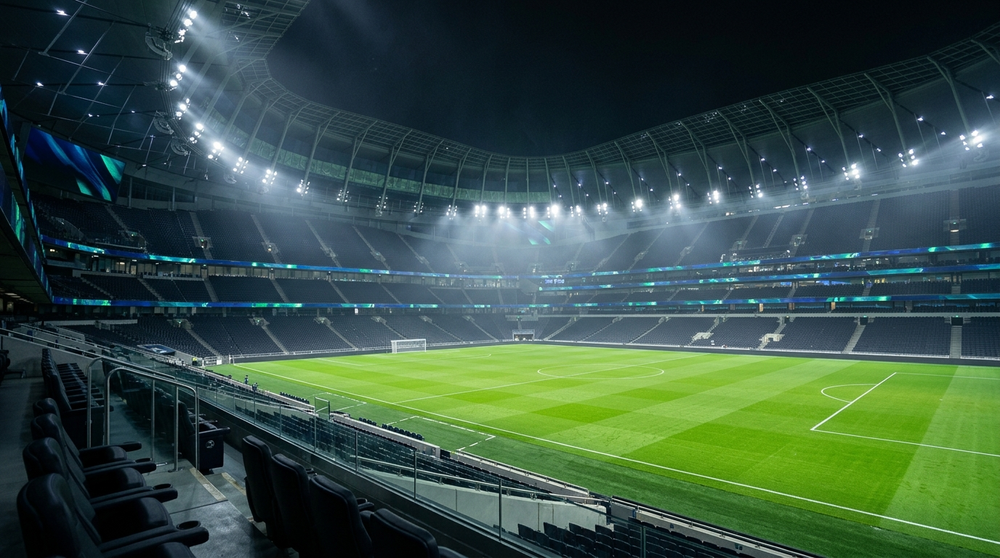
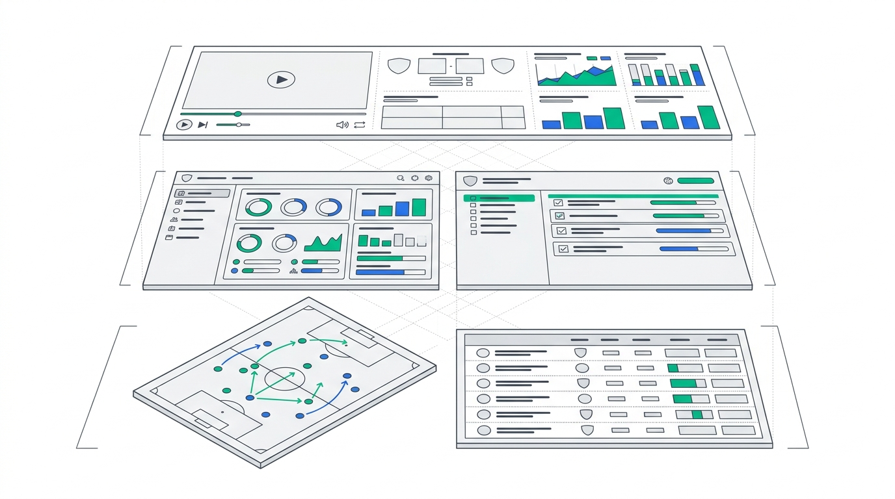

从“拼凑的后台表格”升级为“有主场归属感与转播质感的足球经理工作台”
本规范针对 YFFM1 现有功能完整但多阶段开发导致的视觉割裂、主页信息重复、导航挤压及装饰失衡问题，制定可直接指导前端落地的 Token 标准、布局栅格、现有资产适配规则及四批迭代路线。点击上方页签可直接体验俱乐部主场（支持赛前/赛中/赛后/休赛期及桌面/手机切换）、阵容战术与比赛直播/记录示范页。
视觉方向：现代体育转播暗夜主场（Modern Broadcast & Tactical Slate）
YFFM1 是玩家每天高频登录处理的网页足球经理游戏。整体设计抛弃“页游式密集发光金边”与“生硬后台管理表格”两个极端，确立70% 战术深灰蓝高信噪比基底 + 20% 体育转播级焦点横幅 + 10% 球员卡画与荣誉高亮的黄金配比：
顶栏与第一层主视觉常驻本队队徽、俱乐部名称、所属级别（A级/B级）与主场氛围底图；支持提取队徽主色作为焦点区环境微光。
下一场比赛采用欧洲主流赛事记分牌（Scorebug）构图，主客队徽对称、比分/开赛倒计时等宽放大、赛事标签（A级联赛/16强杯赛）色彩一眼可辨。
严格保护已有球员卡画的手动裁切参数，使用标准化卡槽容器承载卡画与卡框；在阵容、背包和最佳球员模块突出球星立绘。
合并旧版重复展示的“积分榜、球队简报、近期赛果、长日报”，首屏严控主视觉高度（≤240px），确保桌面端无需滚动即可总览排名与真实待办。

图 1-1：YFFM1 联赛主页三层式视觉信息架构（焦点比赛层 → 处境与待办层 → 赛果与摘要层）
| 痛点诊断（现状问题） | 第一稿设计取舍（明确做什么） | 视觉禁令（明确不做什么） |
|---|---|---|
| 主页堆砌积分榜、简报、赛果、日报，重复且平淡 | 采用三层架构：第一层比赛主视觉 + 第二层本队相邻5行快照与待办 + 第三层上轮战报与3行微简报 | 严禁在主页平铺完整16队榜单或长篇文字日报；严禁无事编造虚假红点提醒 |
| 部分页面过度装饰，部分页面像粗糙白底表格 | 统一 1px 半透明微边框（rgba(255,255,255,0.08)）与三级深色背景；仅在主比赛卡、开包与强化成功使用氛围高光 |
严禁普通列表/面板使用密集霓虹发光外框、大面积跑马灯或全屏背景视频 |
| 桌面导航展开挤压主体布局，手机端缺少优先级 | 桌面采用左侧固定宽度可折叠导航（220px/64px）或抽屉覆盖层；手机端采用底部 5 核心主导航 + 顶部俱乐部资源条 | 严禁桌面端次级菜单展开时动态推挤右侧主栅格导致球场/表格抖动变形 |
颜色规范：深浅双主题、四级背景、赛事识别与无障碍状态色
1. 背景层级（夜赛深色默认 / 浅色备选）
--bg-canvas
#0B0F17 / #F1F5F9
--bg-surface-1
#111827 / #FFFFFF
--bg-surface-2
#1E293B / #F8FAFC
--bg-surface-3
#334155 / #E2E8F0
2. 品牌主色与赛事识别色
3. 状态语义与战绩色（必配图标/文字）
4. 文字层级与球星卡框稀有度色
字体规范：中文清晰阅读与比分/统计等宽对齐规则
font-variant-numeric: tabular-nums
| 层级 Token | 推荐字体栈 | 字号 / 行高 / 字重 | 典型应用场景 |
|---|---|---|---|
| Display-Score | Barlow Condensed / DIN Alternate | 40px (2.5rem) / 1.0 / 800 | 主比赛卡大比分、直播记分牌、开包总评 |
| Heading-Page (H1) | PingFang SC / HarmonyOS Sans SC / Microsoft YaHei | 22px (1.375rem) / 1.3 / 700 | 俱乐部名称、页面一级主标题 |
| Heading-Panel (H2) | 中文无衬线系统栈 | 16px (1.0rem) / 1.4 / 600 | 模块卡片标题（如“A级积分榜快照”、“俱乐部待办”） |
| Body-Standard | Inter + Noto Sans SC | 14px (0.875rem) / 1.5 / 400-500 | 球员姓名、比赛事件流、待办描述、常规按钮 |
| Data-Mono | JetBrains Mono / Inter (tabular-nums) | 13px (0.8125rem) / 1.4 / 600 | 积分、净胜球、控球率、估算xG、转会价格、倒计时 |
| Caption-Tag | Inter + Noto Sans SC | 12px (0.75rem) / 1.35 / 500 | 赛事角标、估算说明徽章、位置缩写（ST/CM/CB） |
数据与统计指标强制排版铁律（保留历史决策）
布局与响应式规范：解决导航挤压、建立桌面与手机端清晰优先级
- 容器宽度：最大内容区
1440px，12 列 CSS Grid，列间距16px，外边距24px。 - 导航防挤压机制：左侧主导航固定
220px（小桌面可一键收起为64px纯图标栏）。二级子菜单采用页面顶部水平胶囊页签（Sub-Tabs）或浮动层（Popover），严禁展开时推挤右侧主工作区宽度。 - 首屏高度红线：第一层“当前比赛主视觉”高度控制在
200px–236px，保证1080p桌面首屏完整露出第二层（本队排名快照 + 真实待办事项）。
- 8px 间距阶梯：组件内紧凑间距
8px、卡片内边距16px–20px、模块区块间距16px–24px。 - 圆角规范：主比赛横幅/大容器
12px；常规面板/球员卡槽8px；按钮/输入框/胶囊标签6px。 - 克制边框与阴影：全局面板统一采用
1px solid rgba(255,255,255,0.08)；仅弹窗与拖拽中的球员卡使用投影0 12px 28px rgba(0,0,0,0.45)，取消一切无意义的发光描边。
- 导航重构：隐藏左侧边栏，切换为顶部精简俱乐部身份条（48px）+ 底部 5 格固定主导航（56px）（主场 / 赛事 / 阵容 / 球员 / 俱乐部）。
- 内容重排：第一层比赛卡改为紧凑上下对称记分牌；第二层“待办事项”置顶在积分榜上方（方便随时上线消红点）。
- 折叠与移至次级入口：积分榜快照在手机端仅保留本队及上下相邻共 3 行（隐藏胜/平/负明细列，仅留排名/队名/场次/净胜/积分）；近期赛程与日报收起为手风琴抽屉。
核心组件规范与现有卡画/队徽/球场素材适配标准
scale / offsetX / offsetY）
1. 球员卡容器规范（保护现有手动定位参数）
Aspect-Ratio 3:4现有球员卡画包含大量人工调整过的裁切与偏移参数。UI 升级严禁重置或覆盖数据库中的裁切坐标，统一通过外层标准比例裁剪框 + 内层独立变换画布实现三种尺寸无缝缩放：
2. 队徽、奖杯与通用组件规范
统一采用正方形 object-fit: contain 容器，内置 10% 安全内边距与微弱暗角底托，防止亮色或深色异形队徽与背景融合。规范四档尺寸：64px（比赛主卡）、36px（顶栏/战报）、24px（积分榜行）、16px（赛程微标）。
奖杯仅在俱乐部荣誉室、联赛/杯赛冠军角标中独立陈列，配深色丝绒质感底座与冷光描边，不在常规操作按钮或导航栏滥用奖杯图标。
一切核心操作（检查阵容、进入直播、一键轮换、报价）必须为常驻可见按钮，严禁鼠标悬停才出现操作入口。分为主按钮（主场绿实心）、次按钮（深灰描边）、赛事直播按钮（脉冲红实心）、危险操作（暗红描边）。
本队所在行固定使用 rgba(16,185,129,0.12) 绿色底纹 + 左侧 3px 实心绿条 + [我方] 胶囊标签，不依赖纯颜色区分升降级区与本队位置。
交互九态与重点动效演出规范（支持点击实测）
日常保存/切换仅用轻提示（不打断操作流）；比赛进球、球员强化成功、高阶球星开包采用专属横幅或翻牌演出，且自动响应右上角“减少动效”开关。
各功能页视觉分工与红线约束
边界划分与四批开发落地顺序
深浅色 CSS 变量、字体与等宽数字规则、8px 间距阶梯、1px 微边框面板、主次按钮状态、顶部俱乐部资源栏与左/底导航框架、数据刷新保持滚动条与展开态机制。
主页焦点比赛横幅球场底图、战术页草皮网格与三预案切换器、直播页关键事件小圆点回放浮层、强化与开包成功光效演出。
① 主页焦点卡通用夜景看台渐变遮罩（1张 WebP）；② A级联赛 / B级联赛 / 16强杯赛三枚扁平矢量赛事徽章（SVG）；③ 统一无数据/休赛期空状态线性插画（3枚 SVG）；④ 伤病/停赛/合同到期/体能预警高对比度语义小图标（SVG）；⑤ 强化成功与进球横幅 CSS 扫光纹理（纯代码实现，无需序列帧）。